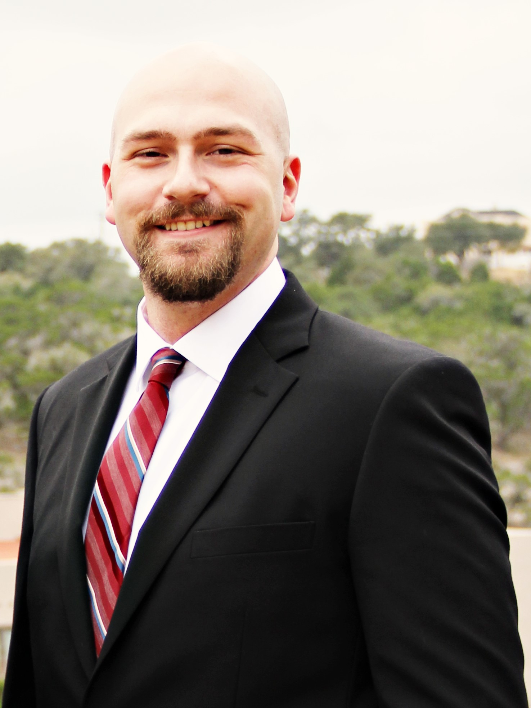
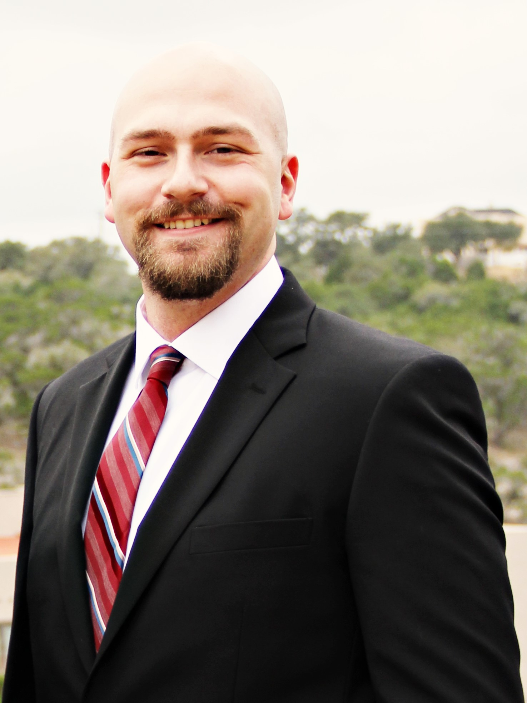

|  |
Matthew J. Tilleman
|
|  |
Matthew J. Tilleman
|
| Dates | Company | Position |
|---|---|---|
| 2014- | Advantest of America | Applications Engineer - Expert |
| 2013-2014 | Silicon Labs, Inc. | Senior Product Test Engineer |
| 2012-2013 | Avago Technologies | Senior Design Engineer |
| 2006-2012 | Advanced Micro Devices | Senior Product Development Engineer |
| 2004-2006 | Texas A&M University: MISL | Student Research and Design Engineer/ Teacher’s Assistant |
| 2005 | Freescale Semiconductors | Test Engineer Internship |
| Programming Languages | C, C++, Java, Python |
| Test Equipment | Advantest 93000, Teradyne, bench and rackmount equipment |